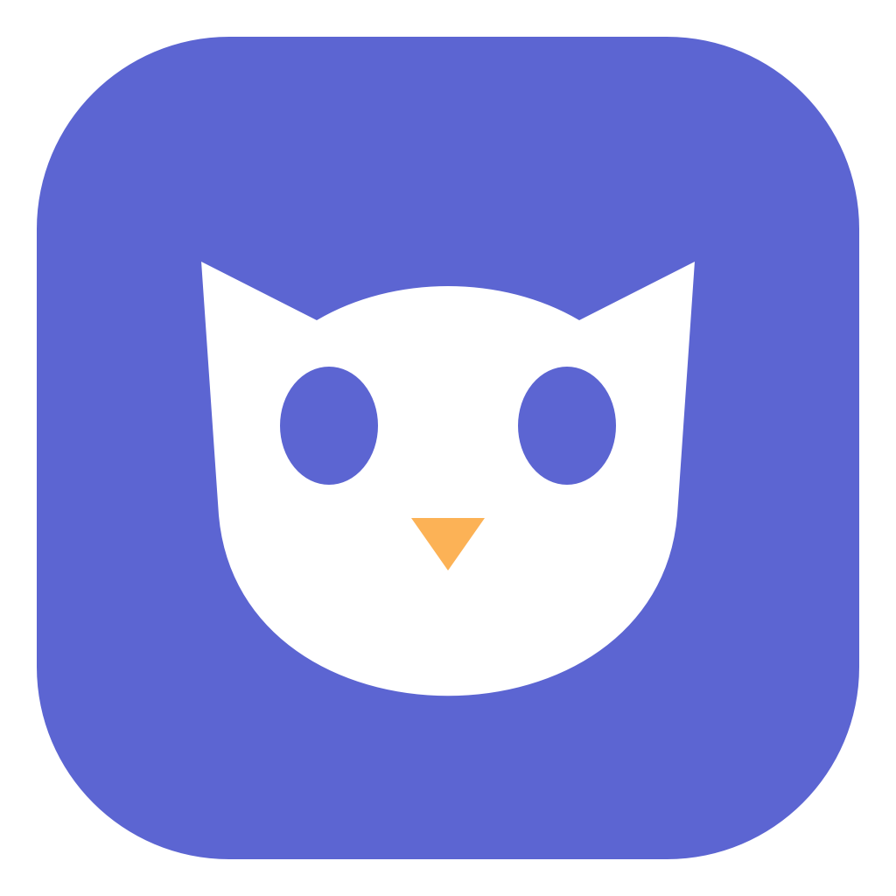

iPhone ↔ Mac
熟悉的隔空投送。
从 Mac 发送，调用系统隔空投送；从 iPhone 接收，打开系统隔空投送接收窗口。沿用 macOS 的原生能力。

Owl Drop为 MAC 和你的手机
iPhone 用隔空投送，安卓手机扫码传。
不用给自己发消息，也不用先传到云端。
macOS 13 或更新版本 · Apple Silicon · v0.1.0 预览版
下载前请留意：当前仅有本地 ad-hoc 签名，未经 Apple 公证。在其他 Mac 上打开时，可能被系统安全机制拦截。
iPhone ↔ Mac
从 Mac 发送，调用系统隔空投送；从 iPhone 接收，打开系统隔空投送接收窗口。沿用 macOS 的原生能力。
安卓手机 → Mac
连接同一可信 Wi-Fi，扫描 Mac 上的临时二维码。手机不用装 App，不用注册账号，文件直接传到这台 Mac。
传视频和文档，也是一样。
打开 Owl Drop 的安卓接收。让手机与 Mac 连接同一可信 Wi-Fi，Mac 会显示临时二维码。
手机扫码打开网页。「选择图片」支持相册多选；视频、文档请使用「选择文件」。
确认后才开始传输，网页显示上传进度。接收期间保持 Owl Drop 打开，结束后关闭接收即可。
~/Downloads/Owl Drop同名文件自动改名，不覆盖已有文件。一个轻量工具。
支持什么、限制在哪，都说明白。
文件通过局域网 HTTP 传输，不经过云服务，但传输内容没有加密。请只在家中等可信 Wi-Fi 使用，不要在公共或陌生网络中传输敏感文件。二维码是临时接收入口，请勿转发；关闭接收后二维码失效。
安卓网页上传单个文件最多 2 GB，目前支持安卓手机 → Mac。iPhone 与 Mac 之间的收发使用系统隔空投送，设备可发现性、接收权限等由系统管理。
v0.1.0 仅使用 ad-hoc 本地签名，没有 Developer ID 签名，也未经过 Apple 公证，因此不能保证在其他 Mac 上直接打开。若系统拦截，请先保留系统保护，查看项目发布说明和后续版本。
已完成本机构建和浏览器双图片上传验证。尚未完成独立安卓手机、iPhone 真机验收，也未完成其他 Mac 的安装验证。当前提供的是预览版本。
不是。Owl Drop 是原生 macOS 应用，Apple 设备间传输调用系统隔空投送，没有移植独立 AirDrop 协议。界面设计参考 omdrop-owl，未复制其 Linux 驱动。源代码可在 GitHub 查看。
Owl Drop · v0.1.0 预览版 · ZIP 下载
需要 Apple Silicon Mac、macOS 13 或更新版本。当前版本未经 Developer ID 签名和 Apple 公证，其他 Mac 可能出现系统拦截。